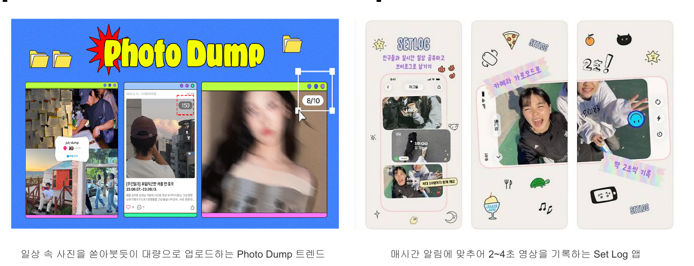
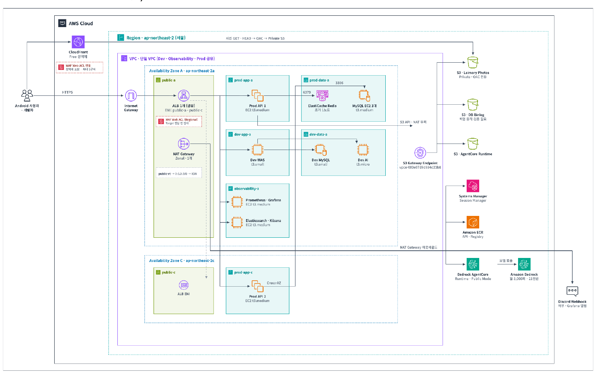
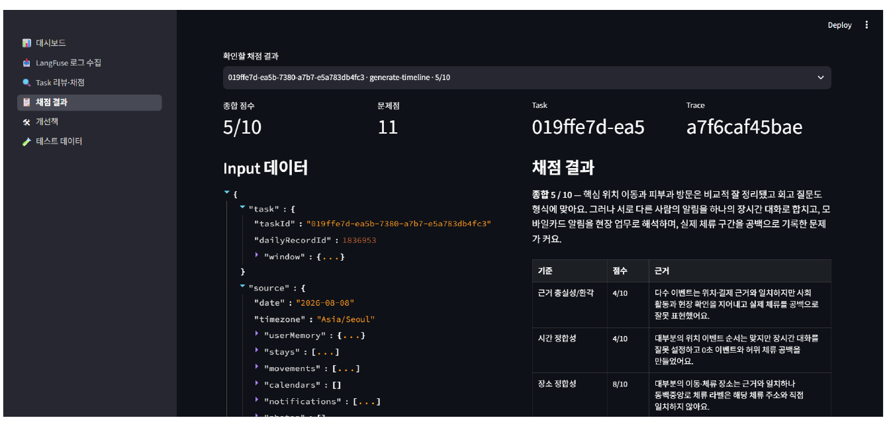

Laimory
프로젝트 중간점검
사진 · 위치 · 일정 · 건강 · 알림을
AI가 연결해 하루의 타임라인으로 정리하고,
일상과 목표를 이어 성장을 돕는 서비스
발표 목차
문제 정의와 시장 검토에서 시작해 개발 진행현황과 남은 검증 계획까지 9개 장으로 구성했습니다.
디지털 시대 속 라이프 로깅과 회고 수요의 증가
사람들은 이미 모바일 기기에 남은 일상 데이터로 자신의 하루를 기록하고 회고하려 하고 있습니다.

기록 문화의 확산
- 일상 속 사진을 대량으로 업로드하는 Photo Dump 트렌드
- 매시간 알림에 맞추어 2~4초 영상을 남기는 Set Log 앱
- 사진 · 일정 · 운동 기록으로 일상을 디지털에 저장하는 흐름
시장도 같은 방향
글로벌 Digital Journal Apps 시장은 큰 폭의 성장이 전망되고 있습니다. 기록과 회고는 특정 세대의 일시적 유행을 넘어 반복적으로 확인되는 사용자 행동입니다.
모바일 라이프 로그 데이터의 파편화와 기록의 어려움
데이터는 이미 기기에 쌓여 있지만 여러 곳에 흩어져 있어, 사용자가 직접 탐색하고 연결해야 합니다.
흩어진 저장소
- 사진은 갤러리
- 위치는 지도 · 기기 기록
- 일정은 캘린더
- 메모는 별도 앱
하루의 흐름이 한 곳에 모이지 않습니다.
사용자가 지불하는 비용
- 흩어진 정보를 직접 수집 · 정리
- 사진 · 일정 · 감정을 스스로 회상
- 기록을 처음부터 작성
시간적 · 인지적 비용이 매번 발생합니다.
AI 회고 수요의 증가와 기존 AI 서비스의 한계
사람들은 AI와 대화하며 삶을 돌아보는 데 익숙해졌지만, 그 AI는 사용자의 실제 삶을 모릅니다.
수요는 이미 형성됨
- 생성형 AI · LLM이 대화 맥락 기억, 파일 · 도구 활용, 개인화 응답으로 빠르게 발전
- AI와 대화하며 감정을 돌아보고 위로를 받는 회고 행동이 일상화
- 기록 서비스와 AI의 결합 사례도 계속 등장
그러나 실제 삶의 데이터와 끊어져 있음
- 사진 · 위치 기록 · 일정을 통합적으로 이해하지 못함
- 삶 기반의 기억 복원이 어려움
- 장기적인 생활 패턴 분석이 어려움
- 개인화된 회고 경험을 제공하는 데 한계
흩어진 생활 데이터를 하루의 기록과 장기 기억으로
사용자가 데이터를 직접 탐색하고 정리하지 않아도, AI가 하루를 타임라인으로 정리하고 그 기록이 쌓여 Personal AI Memory가 됩니다.
자동 연결
사진 · 위치 · 일정 · 메모 등 기기에 이미 존재하는 생활 데이터를 통합
하루 정리
AI가 사건과 시간의 맥락을 추론해 타임라인 초안을 구성
사용자 확정
수정 · 삭제 · 메모로 사용자가 자신의 기록을 완성
Personal AI Memory
축적된 삶의 맥락으로 기억 복원 · 패턴 분석 · 개인화된 회고 제공
기존 서비스의 한계 개선
사용자의 직접 입력에 의존하던 구조를 개선해, 기록을 시작하는 비용을 낮춥니다.
새로운 AI 경험 제공
실제 삶의 데이터를 연결 · 이해하는 Personal AI Memory를 구축합니다.
나의 삶을 기억하는 AI, Laimory
모바일 기기 속 흘러가는 일상의 정보를 모아 연결하고 정리하여, 사용자의 삶을 기억하고 이해하며 목표 달성을 돕는 AI Memory.
+ AI
+ Memory
Laimory는 사용자의 모바일 기기 속 일상 정보를 AI가 자동으로 수집 · 구조화하여 하루를 기록하고, 일상과 목표를 연결해 성장을 돕는 라이프 로깅 서비스입니다.
기존 제품과의 차별점
- 모바일 데이터 기반 하루 자동 기록 — 추가 기기 없이 이미 보유한 데이터를 활용
- 일상 기록 기반 목표 추적 — 별도의 목표 일지 없이 행동과 목표를 연결
- 삶 전체 맥락 기반 개인화 AI 대화 — 대화 맥락이 아닌 생활 데이터에 기반
결과물 형태
Android 애플리케이션으로 Google Play Store를 통해 배포하며, 이용 횟수에 따른 차등 등급 구독형 서비스로 제공합니다.
하루 기록에서 목표 추적, 장기 개인화까지
세 기능은 하루의 기록이 쌓여야 다음 단계가 가능해지는 순차 구조로 설계했습니다.
하루 타임라인 기록
- 사진 · 캘린더 일정 · 이동 GPS · Health Connect 수집
- 무엇을 보고, 하고, 어디를 갔고, 얼마나 잤는지를 AI가 연결 · 분석
- 하루의 타임라인으로 구성해 제시
- 사용자가 직접 수정하고 느낀 점 · 배운 점 · 감정을 메모해 기록 완성
일상 기반 목표 추적
- 사용자가 목표를 설정하면 완성된 타임라인과 일기에서 관련 행동 · 경험을 확인
- 필요한 질문을 제공하고 답변으로 정보를 보완
- 목표를 향한 과정과 변화를 지속적으로 기록
- 일상의 기록이 성장 과정으로 이어지도록 지원
일상 기반 AI 대화
- 타임라인 · 위치 · 일정 · 사진을 이해하는 챗봇
- 하루 · 일주일 · 한 달을 하나의 기억처럼 검색 · 회상 · 분석
- 기억 복원, 생활 패턴 분석, 변화 비교 제공
- 대화 품질이 보장될 만큼 데이터가 축적된 이후 사용하도록 설계
MVP는 타임라인 기록과 목표 추적으로 한정
기획심의와 멘토 의견을 반영해, 먼저 검증할 핵심 사용자 가치와 이후 확장 기능을 명확히 구분했습니다.
하루 타임라인 기록
수집 → AI 생성 → 확인 → 수정 · 메모 → 확정까지 핵심 흐름 구현 후 알파 테스트 진행 중
일상 기반 목표 추적
타임라인 품질이 안정화된 뒤 착수. 목표 등록 → 행동 확인 → 질문 · 리마인드 → 변화 기록
일상 기반 AI 대화
데이터와 품질이 충분히 축적된 이후 단계적으로 제공
완료 기준 · First Value Action
사용자가 생성된 타임라인을 확인하고 필요한 경우 수정한 뒤 첫 일간 회고 작성을 완료하는 것
범위 통제 원칙
새 기능 확대보다 핵심 흐름의 안정성 · 품질 · 사용자 가치 검증을 우선합니다.
디지털 저널 앱 시장은 연평균 10.1% 성장 전망
Straits Research 기준, 개인의 일상 기록과 회고를 위한 디지털 저널링 서비스 수요가 지속적으로 증가하고 있습니다.
글로벌 플랫폼의 진입
Apple Journal, Google Journal, Day One, Limitless 등 플랫폼 기업과 스타트업이 개인의 일상 기록과 회고를 지원하는 서비스를 계속 출시하고 있습니다.
시사점
기록 자체의 수요는 이미 검증된 시장이며, 경쟁은 기록을 얼마나 쉽게 시작하고 지속하게 하는가로 옮겨가고 있습니다.
국내에서도 기록 행동은 대규모로 확인됩니다
네이버의 기록형 캠페인과 인스타그램 해시태그 누적량은 기록하려는 수요가 이미 존재함을 보여줍니다.
#일상기록
약 948만 건
#오운완
약 945만 건
#만보걷기
약 146만 건
마이모리 (국내 AI 감정 기록)
누적 50만 다운로드
출시 1년 기준
수요는 크지만, 지속률에서 무너집니다
동일한 캠페인 데이터를 참여율이 아니라 지속률로 보면, 시장의 빈자리가 드러납니다.
주간일기 챌린지의 지속률
경제적 보상이 있어도 약 15%만 남았습니다. 기록을 시작하게 만드는 것보다 계속하게 만드는 것이 어려운 문제입니다.
기록 수요
이미 충분히 크고 반복적으로 확인됨
AI 결합 수요
단순 저장을 넘어 감정 분석 · 개인화 기능에 실사용 수요 존재
Laimory의 가설
지속률을 무너뜨리는 원인이 기록을 처음부터 작성하는 비용이라면, 초안을 먼저 제공해 그 비용을 없애는 방식이 지속률을 바꿀 수 있습니다.
하루가 너무 빠른 사회초년생 · 저연차 직장인
기록의 필요성은 이미 알고 있지만 정리할 시간이 부족한 20대 후반 ~ 30대를 초기 핵심 사용자로 설정했습니다.
~ 30대
사회초년생 · 저연차 직장인
- 사진도 자주 찍고, 일정을 캘린더로 관리하며 일기를 쓰는 등 기록에 익숙
- 하루를 기록하고 싶지만 피로감을 느낌
- 자신의 생활 패턴 변화와 장기적인 흐름을 알고 싶어 함
이 사용자를 먼저 선택한 이유
- 기록의 필요성을 이미 인식하고 있어 서비스 가치를 설명하는 비용이 낮음
- 여러 곳에 흩어진 생활 기록을 직접 정리하는 불편을 이미 경험하고 있음
- 새로운 업무 · 관계 · 경험이 빠르게 축적되어 회고의 필요가 큼
- 반면 이를 정리할 시간은 부족하므로 AI 초안 방식의 효용을 빠르게 체감할 가능성이 높음
검증 지점
이 가설이 맞다면, 이 집단에서 첫 일간 회고 완료율과 D7 리텐션이 먼저 나타나야 합니다.
유사 서비스는 세 유형으로 구분됩니다
세 유형 모두 자동 수집과 자동 작성 사이의 마지막 단계를 사용자에게 남겨두고 있습니다.
| 유형 | 대표 서비스 | 특징 | 한계 |
|---|---|---|---|
| AI를 사용한 로깅 | Limitless Pendant | 자동 수집, AI 검색, 기억 보조, 업무 중심 | 웨어러블 기기 의존으로 인한 높은 진입장벽 |
| AI 저널링 | Day One · Reflectly · 마이모리 | 감정 기록, 자기 성찰, AI 질문을 통한 기록, 수동 작성 | 수동 입력 의존, 기록 누락 및 장기 맥락 분석 한계 |
| 플랫폼 기반 저널 | Apple Journal · Google Journal | 기기의 데이터 기반 추천, 수동 작성 | 데이터 수집은 지원하지만 최종 기록은 수동 작성, 특정 생태계 종속 |
| Laimory | 모바일 기반 Personal AI Memory | 추가 기기 없이 보유 데이터를 자동 연결하고 AI가 하루의 초안을 먼저 작성 | 권한 동의율과 초기 타임라인 품질을 실제 사용자로 검증해야 함 |
전체 시스템 구성
ap-northeast-2 단일 VPC에 Dev · Observability · Prod를 분리 배치하고, Public / Private Subnet 경계로 데이터 계층을 보호합니다.

구성 요약
- Android — 허용된 생활 데이터 수집
- Prod API 1 · 2 — ALB 뒤 Private Subnet EC2 2대 이중화
- MySQL · Redis — Private Subnet 배치로 외부 직접 접근 차단
- S3 · CloudFront — 사진은 Private + OAC 전용 경로로 제공
- Observability — Prometheus · Grafana, Elasticsearch · Kibana 전용 노드
- Bedrock AgentCore — AI 실행 전환 대상
설계 원칙
외부에 노출되는 경계는 ALB와 CloudFront로 한정하고, 데이터 계층과 AI 실행 계층은 각각 별도 경계 뒤에 둡니다.
사용자 행동 · 안정성 · 체감 성능을 분리해 수집
서비스 운영 현황과 사용자 경험을 체계적으로 파악하기 위해 로그를 세 영역으로 구분했습니다.
비즈니스 메트릭
Firebase Analytics (GA4)
- 온보딩, 타임라인 초안 생성, 이벤트 · 메모 편집 등 주요 행동을 이벤트와 구간화 파라미터로 수집
- 온보딩 단계별 이탈률
- 핵심 기능 전환율 · 기능별 이용률
크래시 로그
Firebase Crashlytics
- 치명적 오류뿐 아니라 주요 기능의 non-fatal 오류도 수집
- 도메인 태그와 상태값을 함께 기록
- 발생 빈도와 재현 조건을 파악해 앱 안정성 개선
퍼포먼스 로그
Firebase Performance Monitoring · Android Vitals
- 앱 시작 및 화면 진입 시간, 네트워크 응답 시간
- 느린 프레임 · 멈춘 프레임 비율
- 백그라운드 배터리 사용량
- 기기 · Android 버전별 성능 문제 개선
369팀 · 3인 역할 분담
AI · 백엔드 · 인프라 · 모바일 · 배포를 세 명이 나누어 담당하며, 서버와 AI는 공동으로 인터페이스를 정의합니다.
이동건
- AI Server · LangGraph 멀티 에이전트 설계 및 구현
- 타임라인 품질 기준과 Evaluation System 구축
- Backend 기능 개발
- 기술 · 제품 통합 조율
정수현
- AWS VPC · Subnet · 이중화 인프라 구축
- API Server 기능 개발
- 사용자 비식별화 구조 구현
- CI/CD 및 배포 · 운영 환경 구성
전형선
- Android 애플리케이션 개발
- 생활 데이터 수집 및 권한 처리
- 모바일 로그 · 지표 계측
- Google Play Store 배포
기획 · AI, 백엔드 · DB, 모바일 · UX 3인 멘토
각 멘토의 검토 영역과, 이번 중간점검에서 지적받은 보완 사항을 함께 정리했습니다.
이상호
기획 및 AI
- 서비스 기획 방향
- AI 응답 품질 평가 및 개선 방향
- LLM 비용 최적화 및 캐싱 전략
보완 지적 — MVP에서 우선 검증할 핵심 가치와 확장 기능을 구분하고, 각 지표의 정량적 목표 수준과 검증 결과를 도출할 것
박정두
백엔드 및 DB
- Spring 개발 설계
- 백엔드 아키텍처 설계
- 클라우드 시스템 아키텍처 설계
보완 지적 — 범위를 넓히기보다, AI 처리 실패 · callback 유실 · 중복 요청 · 서버 재시작에서의 정합성과 재처리를 사용자 시나리오 기준으로 검증할 것
김종찬
모바일 및 UX
- Android 설계 검토
- 지표 기반 클라이언트 안정성 가이드
- 퍼포먼스 가이드
보완 지적 — 나의 지난 하루의 기록에 관심을 갖게 하는 시장을 발굴하고, 시장 규모를 넓혀가기 위한 전략을 함께 준비할 것
8월 알파 · 베타, 9월 최초 배포, 11월까지 주기 배포
현재 8월 알파 테스트 단계이며, 8월 24일부터 30일까지 1주간 베타 테스트를 진행합니다.
프로젝트 기획 · 구체화
사용자 요구사항 분석
시장 · 경쟁 서비스 조사
시스템 구성도 설계
DB · API 명세
로그 · 메트릭 설계
MVP 핵심 기능 개발
서버 · AI 통합
단위 테스트
알파 테스트
통합 테스트
8/24~8/30 베타
Play Store
최초 배포
서비스 운영 시작
1주 단위 주기 배포
지표 기반 개선
사용자 피드백 반영
성능 최적화
사용자 경험 개선
홍보 · 사용자 유치
MVP 핵심 흐름 구현 완료, App Tester 알파 테스트 진행 중
로그인부터 월별 기록 조회까지 하루 타임라인의 전체 사용자 흐름이 실제 기기에서 동작합니다.
로그인
Google · Kakao OAuth
권한 · 수집
사진 · 위치 · 일정 · 건강 · 알림
AI 타임라인 생성
비동기 요청 · 약 40초
편집 · 확정
제목 · 시간 · 메모 · 사진
월별 조회
기록 누적 확인
생활 데이터 수집 및 통합
사진 · 위치 · 일정 · 건강 · 알림은 접근 방법과 권한 체계가 모두 달라, 하나의 흐름으로 모으는 것이 첫 과제였습니다.
문제
서로 다른 접근 방법과 권한
- 데이터마다 제공 API와 권한 요구가 상이
- 권한 거부 · 회수 시 기능 전체가 중단될 위험
- 형식이 달라 AI 입력으로 바로 사용 불가
해결
공통 구조로 정규화 후 로컬 저장
- MediaStore · Calendar Provider · Health Connect 등 Android 제공 기능으로 수집
- 서로 다른 형식을 공통 구조로 변환해 Room Database에 저장
- 보존 기간이 지난 원본은 WorkManager로 정리
결과
부분 권한으로도 동작
- 권한이 거부 · 회수되어도 앱 전체가 중단되지 않고 해당 기능만 제한
- 사용자가 선택한 데이터만 AI 타임라인 생성에 활용
- 타임라인 생성에 동의한 데이터만 서버로 전송
백그라운드 위치 수집 안정화
Android의 백그라운드 실행 제한으로 위치 데이터가 누락되거나 배터리 사용량이 증가할 수 있습니다.
문제
- 백그라운드 실행 제한으로 위치 데이터 누락 발생 가능
- 지속 수집 시 배터리 소모로 인한 사용자 이탈 위험
- 앱이나 기기가 재시작되면 진행 중이던 수집 상태가 사라짐
- Android 버전 · 제조사마다 동작이 다름
해결
- 위치 수집 상태를 사용자에게 알리는 Foreground Service 적용
- 수집된 좌표를 체류와 이동 구간으로 변환해 필요한 데이터만 저장
- 앱 · 기기 재시작 시 진행 중이던 위치 기록을 복원
- 야간 배치 처리로 백그라운드 실행 자체를 최소화
AI 타임라인 생성 상태 관리
타임라인 생성에 약 40초가 걸리므로, 사용자가 화면을 기다리지 않도록 비동기 방식으로 구현했습니다.
생성 요청
동의한 데이터만 서버로 전송
taskId 저장
발급받은 작업 식별자를 앱에 보관
상태 확인
앱 사용 중에는 주기적 폴링
FCM 알림
백그라운드에서는 완료 알림 수신
편집 · 확정
제목 · 시간 · 메모 · 사진 수정 후 하루 기록 확정
현재 구현 범위
- 로그인
- 데이터 권한 설정과 수집
- AI 타임라인 생성 · 편집 · 확정
- 월별 기록 조회
베타 배포 전 집중 검증 항목
- 권한 거부 · 회수 상황
- 네트워크 단절
- AI 생성 지연
- 알림 미수신
- 앱 재실행 후 작업 연속성
API Server의 역할과 인프라 구성
모바일에서 수집된 생활 데이터를 검증 · 가공하여 AI가 사용할 수 있는 형태로 정리하고, 결과를 다시 검증해 저장합니다.
API Server가 담당하는 것
- 사용자 인증과 콘텐츠 소유권 확인 (Google · Kakao OAuth 2.0 / OIDC, JWT)
- 수집 데이터 검증 · 가공, 민감정보 마스킹
- 위치 데이터에 주소 · 주변 장소 정보 보강
- 타임라인 생성 · 조회 · 편집 · 저장
- taskId 기반 비동기 작업 상태 관리
- S3 사진 업로드와 FCM 완료 알림
- AI 생성 결과 검증 후 저장
데이터 계층
영속 데이터는 MySQL, 작업 상태와 OAuth 세션은 Redis, 사진은 Amazon S3에 저장하고 CloudFront로 제공합니다.
네트워크 경계
AWS VPC의 Public · Private Subnet을 분리하고, Public Load Balancer 뒤 Private Subnet의 EC2 2대로 API Server를 이중화했습니다. MySQL과 Redis도 Private Subnet에 배치해 외부 직접 접근을 차단합니다.
관측
로그는 Elasticsearch, 지표는 Prometheus · Grafana, 분산 추적은 OpenTelemetry · Tempo로 관측합니다.
위치 데이터 보강과 Geocoding 병렬 처리
GPS 좌표만으로는 사건을 추론할 수 없어 Kakao API로 주소와 주변 장소로 변환하며, 이때 응답 시간과 부분 실패가 문제가 됩니다.
왜 필요한가
- 위치 데이터는 위도 · 경도 중심으로 구성
- Kakao API로 좌표를 주소와 주변 장소로 변환
- 집에 머문 시간, 회사로 이동한 구간, 식당 방문 등 활동 추론의 근거가 됨
처리 방식
- 하루에 동일 좌표가 반복되므로 중복 제거
- 한 요청에서 최대 50개의 고유 좌표 처리
- 좌표는 서로 독립적이므로 4개씩 병렬 조회
- 보강 완료 후 검증된 생활 데이터를 일괄 저장
부분 실패 허용 기준
- 고유 좌표 실패율 20% 이하 → 성공한 위치 정보만으로 생성 진행
- 실패율 20% 초과 → 품질 부족으로 판단해 생성 중단
- 시간순 3개 좌표 연속 실패 → 생성 중단
서버 간 API 기반 AI 연동으로 구조 변경
초기 구조에서는 AI 서버가 API Server와 같은 데이터베이스에 직접 접근했고, 이로 인해 스키마 변경이 AI 서버 로직 변경으로 이어졌습니다.
Before · DB 직접 접근
- AI 서버가 동일 DB에서 생활 데이터를 조회하고 결과를 저장
- 별도의 전달 API가 필요 없다는 장점
- 그러나 AI 서버가 테이블 구조를 알아야 함
- 스키마가 바뀔 때마다 AI 서버 로직도 함께 변경
- 입력 검증 · 소유권 확인 · 트랜잭션 책임이 두 서버에 분산
After · 책임 분리
- AI 서버는 분석과 타임라인 생성만 담당
- API Server가 전처리된 데이터를 작업별 source Item 공간에 저장
- AI 서버에는 taskId와 작업 전용 토큰만 전달
- AI 서버는 해당 작업의 source Items만 서버 간 API로 조회
- 생성 결과도 서버 간 API로 반환 → API Server가 검증 후 Event · Item · 원본 연결 정보 저장
- 토큰은 조회 · 저장 · Callback 단계마다 교체
개인정보 보호를 위한 사용자 비식별화
생활 데이터가 동일한 식별자로 연결되면 이동 경로 · 생활 습관 · 인간관계까지 추론될 수 있어, 사용자와 데이터 소유자를 분리했습니다.
인증 영역
비밀키 기반 조회 키
원본 ID 미저장
UUIDv4
타임라인 · 사진 · Memory
왜 HMAC인가
일반 SHA-256이 아닌 비밀키 기반 HMAC-SHA-256을 사용해, 비밀키를 모르면 동일한 조회 값을 만들 수 없도록 했습니다. 매핑 테이블만 노출되어도 사용자를 알 수 없습니다.
매핑 테이블에 저장하는 것
- HMAC 조회 키
- Subject ID
- 비밀키 버전
원본 userId는 저장하지 않습니다.
비밀키 분리 관리
HMAC 비밀키는 코드나 DB가 아닌 AWS Secrets Manager에서 별도 관리합니다. DB만 유출되면 조회 키를 계산할 수 없고, 비밀키만 유출되면 매핑과 콘텐츠가 없어 어느 한쪽만으로는 관계를 복원하기 어렵습니다.
7종의 입력을 사건 추론의 근거로 사용
개별적으로 수집된 생활 데이터를 연결해 하루의 주요 사건을 타임라인으로 재구성하고, 각 사건에 회고 질문을 생성합니다.
| 데이터 유형 | 주요 데이터 | AI 활용 방식 |
|---|---|---|
| STAY | GPS 기반 체류 시간, 좌표, 장소명, 주소 | 특정 장소에서 이루어진 활동 추론 |
| MOVEMENT | GPS 기반 출발 · 도착 위치, 이동 거리, 이동 수단 | 출근 · 귀가 · 장소 간 이동 구간 파악 |
| CALENDAR | 일정 제목, 설명, 시간, 장소 | 회의 · 수업 · 약속 등 명확한 사건 확인 |
| HEALTH | Health Connect 걸음 수, 수면 시간과 구간 | 하루 활동량과 취침 · 기상 시간 파악 |
| NOTIFICATION | 모바일 기기에 수신된 알림 | 일정이나 활동의 목적을 보강하는 단서 |
| PHOTO | 모바일 기기로 촬영한 사진 | 멀티모달 LLM으로 사진 속 상황 분석 |
| User Memory | 축적된 일기에서 추론된 생활 맥락, 관계, 습관, 표현 선호 | 타임라인 표현과 회고 질문을 개인화 |
전체 AI 타임라인 처리 파이프라인
하나의 고사양 모델에 전부 맡기지 않고, 데이터 분석 · 결과 통합 · 검증 보정 · 질문 생성이라는 작고 단순한 문제로 나누었습니다.
생활 데이터
병합
Agent
Agent
Agent
검증 · 저장
비용 효율
각 단계가 필요한 정보만 받아 한 가지 역할에 집중하므로, 경량 모델로도 충분한 품질의 결과를 만들 수 있습니다.
디버깅 가능성
단계별 입력과 출력을 구분해 관리하므로 문제가 발생한 지점을 특정하고 해당 단계만 개선하거나 재처리할 수 있습니다.
운영 효율
파이프라인을 안정적으로 관리하면서 불필요한 토큰 비용과 처리 시간도 함께 줄일 수 있습니다.
네 종류의 Agent가 각각 다른 책임을 맡습니다
사건의 의미와 구성은 LLM이 판단하고, 규칙으로 확인할 수 있는 조건은 코드가 확정하도록 역할을 나누었습니다.
Event Agent
- 위치 · 일정 · 사진 · 건강 · 알림은 형태와 분석 방법이 달라 5개로 분리
- 각자 담당 데이터만 전용 프롬프트로 분석
- 병렬 실행으로 처리 시간 단축
- 사건 후보와 보조 단서라는 동일 형식으로 반환
- 일부 실패해도 나머지 결과로 생성 계속
Timeline Agent
- 5개 Agent의 사건 후보와 단서를 종합
- 서로 다른 데이터에서 포착된 같은 사건을 하나로 병합
- 원본 근거의 일치 여부와 사건 간 시간 관계를 함께 고려
- 유형 · 제목 · 설명 · 시간 · 장소를 포함한 타임라인 초안 생성
Repair Agent
- 초안을 실제 저장 가능한 형태로 검증 · 보정
- 누락된 일정 복원, 원본 연결 확인
- 시간 범위 및 수면 경계 적용
- 연속 체류 병합, 중복 · 겹침 정리
- 장소와 사건 유형 보정
- 반드시 지켜야 하는 규칙을 코드로 적용
Question Agent
- 결과 확정 후 이벤트마다 질문 1개 생성
- 사실을 다시 묻지 않음
- 당시의 감정 · 생각 · 의미를 자연스럽게 기록하도록 유도
- 사용자가 일기를 완성하는 진입점 역할
멀티 에이전트 프레임워크와 LLM 선정
자율적 협업보다 실행 경로의 정확한 통제가 중요했고, 모델은 일반 벤치마크 점수보다 실제 서비스 데이터에서의 성능을 기준으로 비교하고 있습니다.
프레임워크 · LangGraph 선정
- CrewAI — 역할과 목표를 부여한 Agent의 자율적 협업에 강점
- AutoGen — Agent 간 메시지 기반 협업과 분산 실행에 강점
- Laimory에 필요한 것은 자유로운 대화가 아니라 데이터별 병렬 분석, 결과 병합, 검증 실패 시 재처리라는 실행 경로의 통제
- → 공유 상태와 분기 · 반복 구조를 그래프로 명시할 수 있는 LangGraph 선정
LLM · 경량 멀티모달 3종 비교
- 동일한 데이터를 입력해 사건 추론 정확도, 한국어 타임라인 품질, JSON 형식 준수율, 이미지 이해 성능, 응답 시간, 비용을 비교
- Provider별 호출 방식 차이는 공통 인터페이스로 추상화하여 모델만 교체해 동일 파이프라인 평가 가능
- Structured Output 검증과 부분 파싱 · 재시도로 오류 내성 확보
추상적 품질 요구를 정량 기준으로 프롬프트에 부여
"자연스럽고 정확한 타임라인을 만들어라"는 지시만으로는 품질이 일정하지 않아, 길이 · 시간 · 누락률 등 측정 가능한 기준으로 구체화했습니다.
| 단계 | 주요 정량 기준 |
|---|---|
| Event Agent | 모든 유효한 원본 데이터를 candidate 또는 fragment에 포함해 누락 방지 · 캘린더는 100% 보존하고 선택한 사진도 모두 한 번씩 반영 · 위치 데이터에서 20분 이하 짧은 체류는 독립 활동으로 단정하지 않고 이동 중 분절 가능성을 우선 검토 |
| Timeline Agent | 제목은 30자 이내, 설명은 1~2문장 · 100자 내외 · 캘린더 · 수면 · 이동처럼 지속시간이 명확한 경우를 제외하면 이벤트는 기본 3시간 이내 · 모든 이벤트에 최소 1개 이상의 유효한 원본 근거 연결 |
| Repair Agent | Timeline Agent와 동일 기준을 재적용 · 제목 30자 초과 또는 설명 120자 · 2문장 초과 시 축약 · 직접적 근거 없이 3시간을 넘는 이벤트는 시간 조정 또는 분할 대상 · 사진 누락 · 중복 귀속, 캘린더 누락, 잘못된 원본 참조 검사 |
| 공통 기준 | 모든 이벤트는 사용자가 요청한 시간 범위 안에서만 생성하고, 실제 입력에 존재하는 rawId를 최소 1개 이상 근거로 연결 → 범위를 벗어난 사건이나 원본으로 확인할 수 없는 사건의 생성을 방지 |
결정론적 도구로 필수 조건을 코드가 확정
생성형 AI는 기준을 이해해도 일부 조건을 누락하거나 입력에 없는 내용을 만들 수 있어, 명확한 규칙은 코드로 다시 검증하고 보정합니다.
근거 · 범위 보정
- 입력에 없는 rawId를 제거하고, 유효한 근거가 남지 않은 이벤트를 삭제
- LLM이 잘못 작성한 sourceType을 원본 데이터의 실제 유형으로 정정
- 타임라인에서 누락된 캘린더 일정을 원본 데이터로 복원
- 요청 시간 범위를 완전히 벗어난 이벤트를 제거하고, 경계에 걸친 이벤트는 범위 안으로 조정
- 원본 근거를 바탕으로 장소명을 확정하고 근거가 없는 주소를 제거
시간 · 중복 보정과 저장 차단
- 식사 이벤트의 지속시간을 20~60분으로 보정
- 기상 이전의 일반 이벤트를 제거하고, 수면 구간과 겹친 이벤트의 시간을 조정
- 이동 없이 이어진 동일 장소의 체류 이벤트와 명확한 중복 이벤트를 병합
- 사진 누락 · 중복 귀속, 120자 초과 설명, 3시간 초과 이벤트는 warning으로 기록
- 저장 직전 제목 · 시간 범위 · 원본 근거 존재 여부를 재검증하고 위반 결과의 저장을 차단
User Memory · 사용자 맥락을 압축한 프로필
사용자가 하루 타임라인을 확정하면, 기존 프로필과 최근 기록을 함께 분석해 전체 프로필을 갱신합니다.
저장하는 정보
- 기본 프로필과 생활 맥락
- 주요 관계
- 성격과 가치관
- 선호와 반복되는 생활 패턴
- 현재 관심사와 목표
- 감정 패턴
- 기록 방식에 대한 선호
- 사용자별 추가 속성
추출 방식
반복 활동과 생활 패턴은 타임라인에서, 성격 · 가치관 · 선호는 사용자가 직접 작성한 memo에서 추출합니다.
누적이 아니라 재작성
각 정보는 자유로운 자연어로 표현하되 고정된 JSON 스키마 안에서 관리합니다. 새 내용을 계속 쌓는 대신 기존 정보와 병합해 전체 프로필을 다시 작성하여, 오래된 정보와 중복을 정리하고 일정한 크기를 유지합니다.
사용처와 안전장치
Timeline · Question Agent에 제공되어 장소와 관계를 사용자 맥락에 맞게 해석합니다. 다만 User Memory는 사건 발생을 증명하는 원본이 아니므로, 수집 데이터와 충돌하면 항상 원본을 우선합니다.
Evaluation System · 평가에서 개선, 재검증까지 자동화
사람이 결과를 일부 확인하는 방식으로는 개선 여부를 객관적으로 판단할 수 없어, 평가 · 개선 · 재검증을 하나의 순환으로 구성했습니다.

실제 채점 사례 · generate-timeline
- 근거 충실성 / 환각 4/10 · 시간 정합성 4/10 · 장소 정합성 8/10
- 각 점수마다 판단 근거를 문장으로 기록
순환 구조
Langfuse 수집 → LLM-as-a-Judge 평가 → 반복 발생 여부 · 심각도 분석 → 프롬프트 · 후처리 개선책 생성 → 입력 데이터와 기대 조건을 자동 생성해 테스트 데이터로 재검증
서버 운영과 AI 실행의 관측을 분리하고 taskId로 연결
두 관측 대상은 목적이 다르므로 저장소를 나누고, 같은 작업 단위로 함께 분석할 수 있도록 키를 공유합니다.
운영 이벤트
Elasticsearch
- API 처리 결과, 오류 코드, 외부 서버 연동
- stdout JSON → Filebeat → Elasticsearch
- 검색과 집계에 활용
AI 실행
Langfuse
- Agent별 실행 단계, LLM 입출력
- 모델 · 토큰 · 지연시간
- 계층형 Trace 분석에 특화
- 호출량 · 에러율 · 비용 이상 징후 조기 감지
연결 키
taskId
- 두 시스템을 taskId로 연결
- Elasticsearch에 민감한 AI 처리 본문이 과도하게 쌓이는 것을 방지
- 서버 장애와 모델 품질 문제를 독립적으로 분석
현재 실행 환경
배포와 컨테이너 상태를 직접 통제하기 위해 Docker 기반 EC2에 구성했으며, GitHub Actions – ECR – SSM으로 자동 배포와 장애 시 롤백을 지원합니다.
전환 계획 · Bedrock AgentCore
타임라인 생성 요청이 특정 시점에 집중되고 평상시에는 유휴 시간이 발생하는 특성을 고려해, On-demand 실행으로 상시 EC2의 유휴 비용과 인프라 관리 부담을 줄일 계획입니다.
핵심 타깃과 First Value Action 정의
앱 설치 수를 늘리는 것을 넘어, 서로 다른 소구점에 반응하는 핵심 사용자를 확보하고 실제 제품 사용으로 이어지는지를 검증하는 데 목적이 있습니다.
핵심 타깃
바쁜 업무와 일상 속에서도 하루를 기록하고 회고하는 데 관심이 높으며, 평소 일기나 메모를 쓰고 사진과 일정으로 일상의 흔적을 남기는 데 익숙한 20대 후반 ~ 30대 사회초년생 및 저연차 직장인
- 기록의 필요성을 이미 인식하고 있음
- 흩어진 기록을 직접 정리하는 불편을 경험
- 새로운 업무 · 관계 · 경험이 빠르게 축적되어 회고 필요가 크지만 정리할 시간은 부족
First Value Action
Laimory의 핵심 가치는 사용자가 하루를 의미 있는 기록으로 남기고 삶의 흐름을 기억 · 이해하도록 돕는 데 있습니다. 따라서 생성된 타임라인을 자신의 기록으로 받아들이고 첫 회고까지 완료한 시점을 핵심 가치를 처음 경험한 순간으로 정의했습니다.
멘토 의견 반영 — 사용자가 이 지점에 얼마나 빨리 도달하는지도 함께 측정합니다.
두 가지 소구점으로 사용자 문제 가설을 비교
핵심 타깃이 어떤 문제와 가치에 더 크게 반응하는지 확인하기 위해 서로 다른 사용 동기를 대표하는 두 메시지를 선정했습니다.
“오늘 하루, 얼마나 기억하고 있나요?”
사용자 문제 가설
오늘 어떤 일이 있었는지 다시 떠올리고, 지나간 하루를 기록으로 남기고 싶어 하는 사용자가 있을 것이다.
Laimory의 제안
오늘 있었던 일을 타임라인으로 정리하여 하루를 다시 확인하고 기록으로 남길 수 있도록 돕는다.
→ 하루를 다시 기억하게 해주는 서비스로 제시
“일기를 쓰고 싶지만, 매일 기록하는 일이 힘들지 않나요?”
사용자 문제 가설
이미 일기를 쓰는 사용자 중에는 하루를 처음부터 직접 떠올려 작성하기보다, AI가 정리한 타임라인을 바탕으로 기록하는 새로운 방식에 관심을 보이는 사용자가 있을 것이다.
Laimory의 제안
AI가 하루의 타임라인을 먼저 제공하고, 사용자가 수정하고 회고를 더해 일기를 완성하도록 돕는다.
→ 기존 일기 작성을 도와주는 서비스로 제시
베타 테스트와 출시 후 소구점 검증 계획
베타에서 제품 문제를 걷어낸 뒤, 정식 출시와 함께 두 소구점을 동일 조건에서 비교합니다.
베타테스터 모집 및 제품 검증
- 회원가입부터 첫 일간 회고 완료까지의 First Value Action과 단계별 KPI 수집
- 종료 후 Google Form 설문과 인터뷰로 타임라인 품질 · 사용성 피드백 확보
- 발견된 문제를 제품 개선에 반영
앱 출시 이후 마케팅 및 소구점 검증
- Instagram 브랜드 계정 — 실제 사용 과정과 주요 기능을 Reels · 게시물로 제작해 인지도 확보
- Meta 광고 — 소구점별 광고 소재와 랜딩 페이지를 제작
- 핵심 메시지를 제외한 타깃 · 광고 형식 · 랜딩 구성 · CTA는 동일하게 유지
- CTA는 앱 설치하기로 설정하여 Google Play로 연결
- 총예산 약 30만 원을 두 소구점에 동일 배분하여 약 1주일간 집행
- 설치 리퍼러와 GA4로 광고 유입부터 첫 가치 행동까지 전환 추적
성과가 높은 소구점에 후속 마케팅 예산을 집중합니다.
캠페인 KPI · 어떤 소구점이 실제 사용을 만드는가
클릭에서 설치, 설치에서 첫 가치 행동까지 단계별로 끊어 측정해 소구점의 실질 효율을 비교합니다.
| KPI | 정의 | 확인 목적 |
|---|---|---|
| 광고 클릭률 | 광고 노출 사용자 중 광고를 클릭한 사용자 비율 | 어떤 소구점이 더 큰 관심을 유도했는지 확인 |
| 앱 설치 전환율 | 광고를 클릭한 사용자 중 앱을 설치한 사용자 비율 | 광고 메시지가 실제 앱 설치로 이어졌는지 확인 |
| 캠페인별 첫 가치 행동 전환율 | 캠페인을 통해 앱을 설치한 사용자 중 첫 일간 회고를 완료한 사용자 비율 | 소구점이 실제 핵심 가치 경험으로 이어졌는지 확인 |
| 첫 가치 행동 사용자 획득 비용 | 캠페인 광고비를 첫 일간 회고를 완료한 사용자 수로 나눈 값 | 소구점별 실질적인 사용자 획득 효율 비교 |
앱 내부 KPI와 측정 · 활용 방법
베타테스터와 출시 이후 유입 사용자 모두 동일한 기준으로 행동 지표를 수집합니다.
| KPI | 확인 목적 |
|---|---|
| 권한 동의율 | 권한 요청 과정에서 발생하는 이탈 확인 |
| 타임라인 완료율 | 생성된 타임라인이 실제 기록으로 받아들여졌는지 확인 |
| 이벤트 수정률 | AI가 생성한 내용의 정확도와 사용자의 수정 부담 확인 |
| 이벤트 삭제율 | 불필요하거나 잘못 생성된 이벤트의 정도 확인 |
| 메모 추가율 | 타임라인을 자신의 기록으로 확장한 참여 행동 확인 |
| 평균 메모 작성 수 | 타임라인에 대한 사용자의 참여 정도 확인 |
| D1 · D7 · D30 리텐션 | 타임라인 기록 경험이 지속적인 사용으로 이어지는지 확인 |
측정
GA4와 앱 내부 이벤트로 권한 동의, 타임라인 확인, 이벤트 수정 · 삭제, 메모 추가, 일간 회고 완료 및 반복 회고 행동을 측정합니다.
해석 원칙
수정 · 삭제율이 높으면 정확도가 낮거나 수정 부담이 큰 것으로, 메모 추가율이 높으면 자신의 기록으로 적극 활용한 것으로 볼 수 있습니다. 다만 행동만으로 만족 여부를 단정하지 않고 첫 회고 완료율과 설문 · 인터뷰를 함께 분석합니다.
수집 범위 제한
분석 이벤트에는 메모 내용이나 사진 · 위치 · 타임라인 원문을 포함하지 않으며, 수정 · 삭제 · 작성 횟수와 완료 여부 등 행동 정보만 수집합니다.
가설 재검토와 1주 스프린트 검증 루프
기획심의 및 멘토 의견을 바탕으로 핵심 사용자 문제와 서비스 가설을 재검토하고, MVP 범위를 구체화했습니다.
문제 · 가설 재검토
기획심의 · 멘토 의견 반영
MVP 범위 확정
타임라인 기록 · 목표 추적
사용자 흐름 설계
Figma 프로토타입
알파 테스트
핵심 흐름 반복 개선
게이트 리뷰
단계 종료 시 진입 여부 판단
프로토타입으로 설계한 흐름
데이터 연결, 타임라인 생성 · 편집 · 저장, 목표 등록 · 리마인드까지의 사용자 흐름을 Figma로 설계하고 알파 테스트를 통해 반복 개선했습니다.
기능별 효과 검증 지표
- 온보딩 완료율 · 최초 타임라인 생성률
- 목표 등록률 · 리마인드 확인률 · 할 일 완료율
- D1 · D7 · D30 리텐션
GitHub 기반 협업과 LLM Wiki 기반 지식 축적
코드의 변경 이력뿐 아니라, 논의와 결정의 근거도 함께 축적되도록 프로세스를 구성했습니다.
개발 협업
- Git Flow 기반 브랜치 전략으로 main · dev · feature를 목적에 따라 분리
- GitHub Issue와 Pull Request로 작업 및 변경 이력 관리
- AI Coding Agent를 코드 분석, 구현 계획 수립, 테스트 작성, 문서화에 활용
- 프로젝트 공통 규칙과 반복 작업은 재사용 가능한 Agent Skill로 작성해 팀원 간 공유
- AI Agent가 생성한 결과는 자동 테스트와 코드 리뷰를 거쳐 통합
- GitHub Actions로 빌드와 배포 자동화
지식 협업 · 프로젝트 전용 LLM Wiki
- Andrej Karpathy가 공개한 오픈소스 LLM Wiki 사례를 참고해 구축
- 기획 자료, 회의 기록, 기술 의사결정, 시스템 구조, 문제 해결 과정을 축적
- 원본 자료와 검토된 지식을 구분하여 관리
- 기존 논의와 결정 사항을 효율적으로 조회
- 반복적인 자료 탐색을 줄이고, 축적된 근거를 바탕으로 새로운 아이디어와 기획안을 구체화
통합 계약과 자동 배포 · 복구, 디자인과 법률 검토
개별 기능의 완료보다 컴포넌트 간 책임과 실패 시 복구 가능성을 함께 관리합니다.
시스템 통합
- Android · Backend · AI Server 간 API와 데이터 형식 정의
- Sequence Diagram으로 호출 순서와 책임 명시
- 수집부터 생성 · 편집 · 저장까지의 흐름 통합
배포 자동화
- Backend · AI Server를 Docker로 컨테이너화
- GitHub Actions로 테스트 · 이미지 빌드 · Amazon ECR 등록
- AWS SSM을 활용한 EC2 배포
- health check 실패 시 직전 이미지로 복구
- App Tester → Play Store 테스트 트랙 → 정식 출시
디자인
- Figma로 와이어프레임과 프로토타입 제작
- 컬러 · 타이포그래피 · 컴포넌트로 구성된 디자인 시스템 사전 정립
- 타임라인 · 회고 화면은 정보 과부하 없는 미니멀 레이아웃
- 베타 피드백을 반영해 UI 반복 개선
법률
- 위치정보 · 개인정보 처리, 제3자 제공 동의 등 법적 위험을 법률 멘토 자문으로 사전 검토
- 개인정보처리방침과 이용약관 마련
- 회원가입 · 권한 요청 흐름에 명확한 고지와 동의 절차 반영
예상 문제점 및 해결방법
개발 · 프라이버시 · 프로젝트 관리 · 상용화 네 측면에서 예상되는 위험과 대응을 사전에 정의했습니다.
| 구분 | 문제점 | 해결방안 |
|---|---|---|
| 개발 | 초기 데이터가 충분히 누적되지 않은 상태에서 AI 분석 · 요약 품질이 낮아 사용자 이탈 발생 가능 | AI Chat 및 고급 분석 기능은 일정 데이터 누적 후 점진적으로 활성화 |
| 개발 | 사용자가 급증할 경우 AI 분석 요청과 데이터 수집이 동시에 몰려 서버 과부하 및 응답 지연 발생 가능 | 클라우드 오토 스케일링 적용, AI 분석 요청은 비동기 큐 방식으로 처리하고 부하 테스트로 선제 검증 |
| 개발 | Android 버전마다 권한 정책이 달라 기능이 제한될 수 있고, 백그라운드 수집 시 배터리 소모로 이탈 발생 가능 | 권한별 폴백 로직으로 허용된 데이터만으로 부분 동작, WorkManager 기반 야간 배치로 백그라운드 실행 최소화 |
| 프라이버시 | 민감한 개인 데이터를 수집 · 분석하는 구조로 인해 유출 · 오남용을 우려한 권한 거부 및 이탈 발생 가능 | 기기 내 우선 처리, 서버 전송 직전 모든 정보를 사용자에게 공개, 온보딩에서 데이터 처리 방식 명확히 안내 |
| 프로젝트 관리 | MVP 범위가 확장되거나 요구사항이 변경되어 일정 지연 발생 가능 | 1주 단위 스프린트 운영, 각 단계 종료 시 게이트 리뷰로 다음 단계 진입 여부 결정 |
| 상용화 | 가치를 체감하려면 일정 기간 꾸준히 사용해야 하므로, 신규 사용자가 의미 있는 경험 전에 이탈할 가능성 | 친구 · 커뮤니티 기능으로 상호작용 유도, 미접속 감지 후 개인화 푸시 알림으로 재방문 유도 |
Android 구독형 서비스 · 3단계 등급
기본 기록 기능은 무료로 제공하고, AI 기반 회고 · 패턴 분석 · 일상 기반 AI 대화 등 고급 기능을 구독 사용자에게 제공합니다.
Free Tier
- AI Timeline 생성 월 10회
- 목표 추적 최대 1개
- 핵심 라이프 로그 기록 기능
Premium Tier
- AI Timeline 생성 월 20회
- 목표 추적 최대 5개
- 제한된 일상 기반 AI 대화
연 23,000원 · 경쟁 서비스 평균보다 낮게 책정
Max Tier
- AI Timeline 생성 하루 2회
- 목표 추적 무제한
- 일상 기반 AI 대화 전체 제공
연 78,000원 · 주요 구독 서비스 가격대(7~8천 원) 참고
| 연 구독료 비교 | Laimory | Reflectly | 마이모리 | Day One |
|---|---|---|---|---|
| 가격 (연) | 23,000원 / 78,000원 | 26,000원 | 29,500원 | 120,000원 |
| 라이프 로그 자동 수집 | O | X | X | X |
3개월 운영 비용과 구독 손익분기 가정
9월 초 배포부터 12월 초까지 약 3개월간 예상되는 운영 비용을 산정했습니다.
- API 서버 — Spring 기반 2대(EC2 t3.medium), 개발용 서버, Load Balancing 및 기본 네트워크
- AI — AgentCore Runtime + Bedrock, 월 3,000회 · 회당 70원 기준, 개발용 AI 서버
- 모니터링 — Prometheus · Grafana, Elasticsearch · Kibana EC2와 EBS
운영 비용 가정
마케팅 제외 3개월 총 270만 원
손익분기 예상 사용자 수
Tier별 가격 차등 구조로 실제 지불 의사를 단계별로 검증하고 Free → Premium → Max 전환을 유도합니다.
사용자 측면과 비즈니스 측면의 기대효과
기록의 편의성에서 시작해, 데이터가 누적될수록 가치가 커지는 구조를 목표로 합니다.
사용자 측면
- 모바일 기기 내 앱에 흩어진 사진 · 위치 · 일정 데이터를 하나의 타임라인으로 자동 통합하여, 별도 정리 없이도 하루 흐름을 쉽게 회상
- AI 기반 패턴 분석 · 회고 기능으로 자신의 행동 · 관계 · 생활 패턴을 객관적으로 파악
- 기록 피로 없이 의미 있는 자기 인식 경험 획득
비즈니스 측면
- Self-Tracking · AI Memory 시장 초기 단계에서 기존 서비스의 기록 피로 한계를 극복한 차별화된 포지션 선점
- 데이터가 누적될수록 AI 분석 품질이 향상되고 서비스 가치가 상승 → 장기 리텐션과 유료 전환 기대
- MVP PMF 검증 후 구독 결제 · 단계별 확장으로 지속 가능한 수익 모델 구축
권한 · 데이터 안정성 · 신뢰
기획심의에서 제기된 의견과 이번 개발 기간 동안의 반영 결과입니다.
| 기획심의 의견 | 반영 결과 |
|---|---|
| 초기 사용자가 민감한 사진 · 위치 · 일정 권한을 허용할 만큼의 즉시 체감 가치는 무엇이며, 이를 단계적으로 경험시키는 권한 요청 UX는 어떻게 설계할 것인가 | 모든 권한을 한 번에 요구하지 않고, 기능을 처음 사용하는 시점에 필요성과 활용 목적을 안내한 후 개별적으로 요청함. 허용된 데이터로 타임라인 미리보기를 제공하며, 일부 권한을 거부해도 서비스를 이용할 수 있도록 구성함 |
| Android 버전 · 기기별 백그라운드 제약으로 인한 데이터 유실과 배터리 소모를 어떻게 방지하고 검증할 것인가 | 위치 데이터는 Foreground Service와 시간 · 거리 기준으로 수집하고, 진행 상태를 저장하여 앱이나 기기 재시작 후에도 복원함. Android 버전과 기기별로 백그라운드 전환 · 재부팅 상황의 데이터 누락과 배터리 사용량을 검증함 |
| Apple Journal · Day One 등 기존 서비스 대비 사용자가 Laimory에 장기 데이터를 맡겨야 할 차별적 이유와 신뢰 형성 방식은 무엇인가 | 기존 서비스가 직접 입력과 기록 보관에 집중한다면, Laimory는 입력 부담을 줄이고 장기 데이터를 목표 추적과 개인화된 AI 대화에 활용함. 데이터 활용 목적을 안내하고 타임라인 생성 시 AI에게 보내는 데이터를 선택할 수 있도록 하여 신뢰를 형성함 |
| AI가 잘못 생성한 기억을 사용자가 수정 · 삭제 · 비공개 처리할 수 있도록 어떤 통제 UX와 데이터 처리 정책을 제공할 것인가 | AI가 생성한 타임라인은 초안으로 제공하며, 생성 직후 사용자가 내용을 직접 수정 · 삭제할 수 있음. 사용자가 수정한 내용만 최종 기록으로 저장함 |
AI의 필요성과 리텐션
남은 검증 과제는 AI 타임라인이 실제로 기록 부담을 줄이고 지속적인 회고 행동으로 이어지는지를 사용자 데이터로 확인하는 것입니다.
| 기획심의 의견 | 반영 결과 |
|---|---|
| 사진 · 위치 · 일정처럼 제한된 자동 수집 데이터만으로 어떤 독자적이고 유용한 결과물을 제공할 것인가 | 데이터를 단순 시간순 나열이 아닌, LLM이 사진 · 위치 · 일정의 시간과 내용을 함께 분석해 각 데이터의 맥락을 추론하여 하루의 타임라인으로 연결함 |
| 단순 정보 추출 · 시각화를 넘어 AI가 반드시 필요한 지점은 어디이며, 기존 데이터를 조합해 어떤 새로운 정보나 행동 변화를 도출할 것인가 | 사진 · 위치 · 일정 간의 관계를 파악하고 하나의 하루 맥락으로 연결하는 데 AI가 필요함. LLM이 파편화된 정보에서 행동과 하루 흐름을 추론하고 부족한 내용은 질문으로 보완하여, 작성 부담을 줄이고 꾸준히 기록하는 습관을 유도함 |
| 자동 수집만으로 지속 사용이 보장되지 않는 상황에서 반복 방문과 장기 리텐션을 만드는 핵심 사용 시나리오는 무엇인가. 그리고 일기 작성만으로는 리텐션 확보가 어렵다 | 수집된 기록을 바탕으로 개인화된 작성 유도 알림과 목표 리마인드를 제공해 반복 방문을 유도함. 다만 이 지적은 아직 가설 단계이며, 8월 베타와 출시 이후 D1 · D7 · D30 리텐션과 반복 회고율로 실제 검증할 예정임 |
모바일에 이미 쌓인 하루를,
사용자가 확정만 하면 되는 기록으로
지금까지
수집 → AI 생성 → 편집 → 확정까지 MVP 핵심 흐름을 구현하고 알파 테스트를 진행 중입니다.
다음 1개월
8/24 베타로 실패 상황과 사용자 가치를 검증하고 9월 정식 배포합니다.
검증할 질문
AI가 만든 하루가 사용자에게 자신의 기록으로 받아들여지는가.